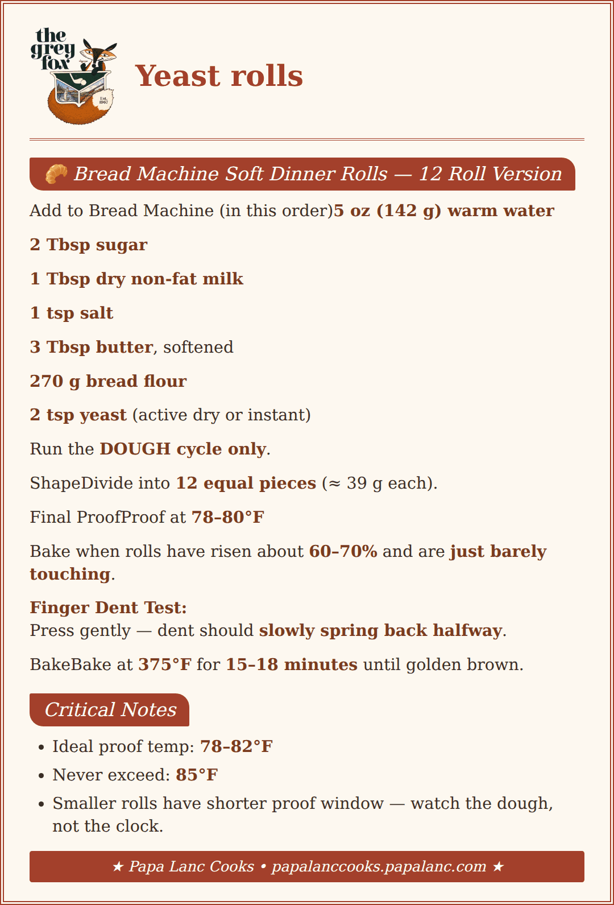

WELCOME
Add to Bread Machine (in this order)5 oz (142 g) warm water
2 Tbsp sugar
1 Tbsp dry non-fat milk
1 tsp salt
3 Tbsp butter, softened
270 g bread flour
2 tsp yeast (active dry or instant)
Run the DOUGH cycle only.
ShapeDivide into 12 equal pieces (≈ 39 g each).
Final ProofProof at 78–80°F
Bake when rolls have risen about 60–70% and are just barely touching.
Finger Dent Test:
Press gently — dent should slowly spring back halfway.
BakeBake at 375°F for 15–18 minutes until golden brown.

WELCOME
Converted from the original file for viewing — open/download the original to edit it.